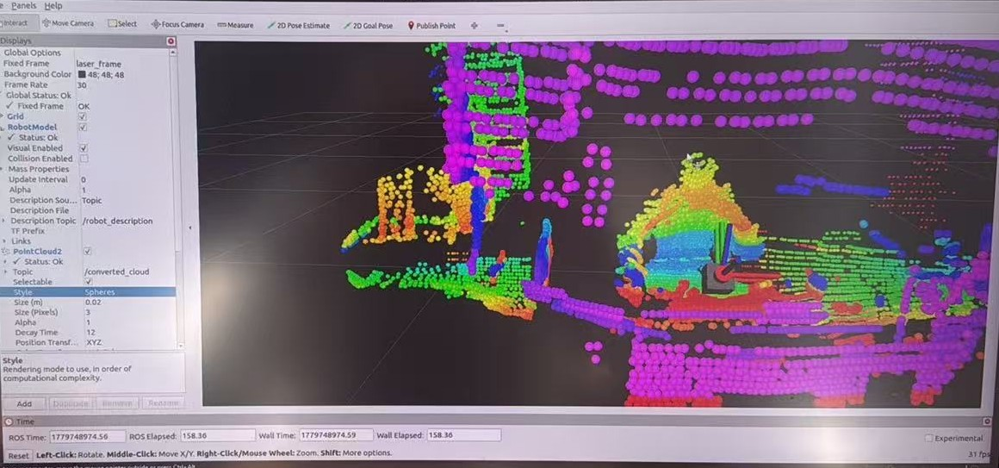
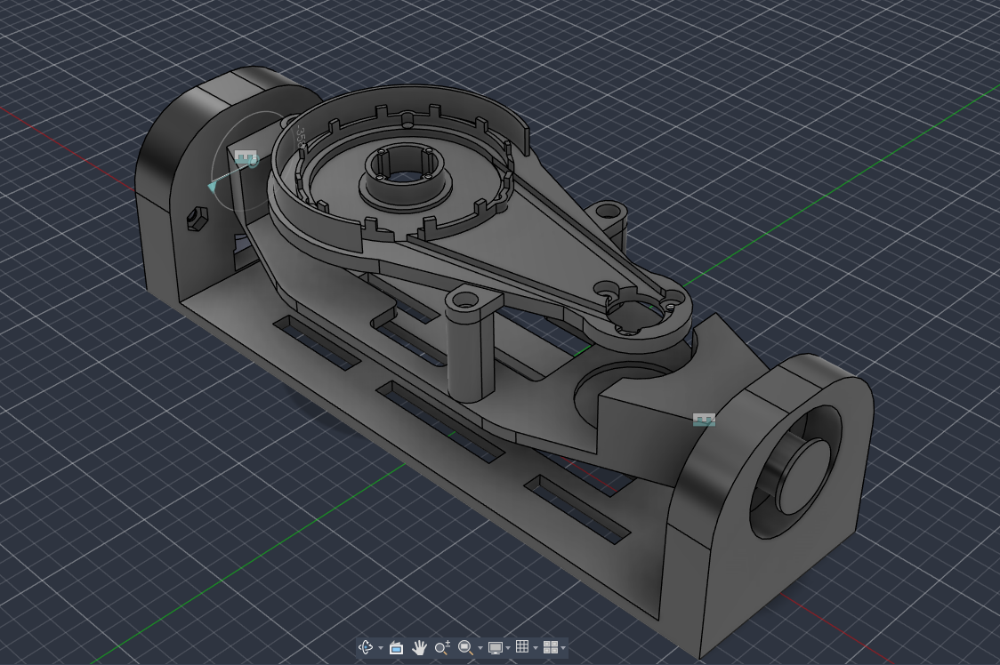
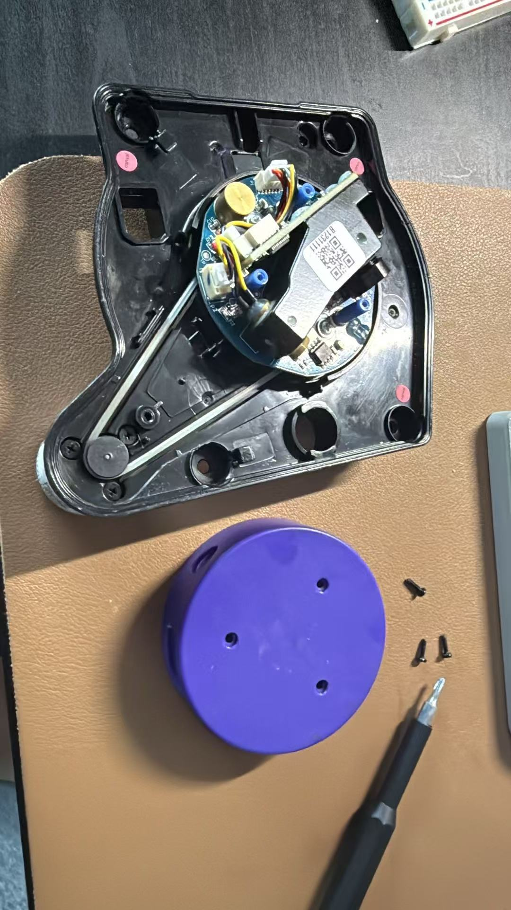
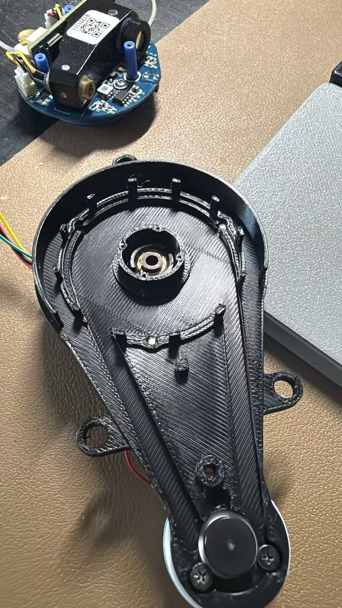
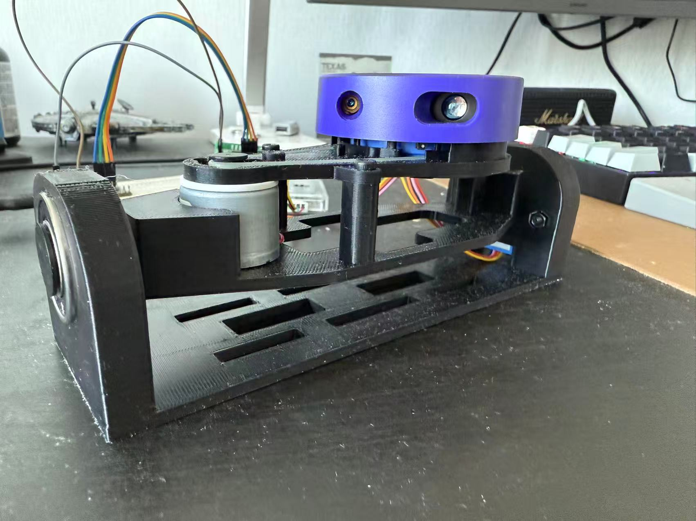

Custom 3D Lidar Scanner
Turn a cheap 2D Lidar into a 3D scanner with a custom mechanical design and firmware.

Overview
The goal of this project was to convert a 2D LiDAR into a 3D scanner using a motorized nodding mechanism. By combining LiDAR range measurements with the mechanism's angular position, the system generated real-time 360-degree 3D point clouds.
The project combined mechanical design, 3D printing, stepper-motor control, encoder feedback, hardware calibration, sensor-data integration, and ROS2 visualization.
Design & Build
I designed the nodding mechanism in Fusion 360 and fabricated it using 3D printing. I measured the LiDAR and supporting hardware, redesigned the mounting frame to fit the physical components, and refined the assembly to maintain stable alignment during motion. After assembly, I calibrated the system by aligning the LiDAR with the mechanism's rotation axis, establishing the encoder's reference position, and verifying the relationship between the encoder angle and the LiDAR orientation.
- Designed and 3D-printed a custom mechanism for mounting and rotating the 2D LiDAR
- Calibrated the hardware by aligning the LiDAR with the rotation axis and establishing the encoder's reference position
- Combined calibrated encoder angles with LiDAR measurements to generate and visualize real-time point clouds in RViz2

images/example.jpg not found yet'">Gallery


